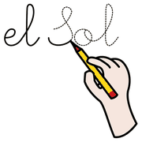
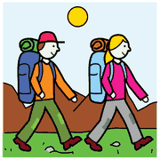
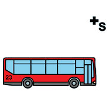
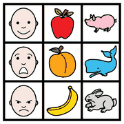
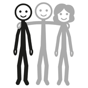
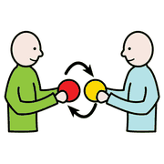

Modulo 3
Cosa aggiunge l'Intelligenza Artificiale
La storia la costruiamo noi. L'AI ci fa andare più lontano, più in fretta.
L'AI in ogni fase, e gli strumenti di oggi
 computer
computer scrivere
scrivere disegno
disegno pittogrammi
pittogrammiIdeazioneTrame, personaggi, varianti
Claude
Claude
TestoScrive, semplifica, cambia prospettiva
Claude
Claude
ImmaginiIllustra le scene da una descrizione
Gemini o Canva
Gemini o Canva
SimboliL'AI propone le parole chiave
ARASAAC, gratuito
ARASAAC, gratuito
ImpaginazioneTesto e immagini in un libro digitale
Canva
Canva
CondivisioneRaccoglie i lavori di tutti
Padlet
Padlet
la bozza
è l'inizio
Storie sociali con l'AI
computerscrivere
controllareIn pochi secondi una bozza personalizzata. Ma la bozza è solo l'inizio: il valore resta la conoscenza che abbiamo della persona.
Regola fissaMai nomi, diagnosi o dati personali. Si scrive “un bambino di 5 anni”, non il suo nome.
Che cosa controllare
- Linguaggio adatto all'età
- Sequenza logica e prevedibile
- Niente dettagli che spaventano
Come adattarla
- Luoghi, orari, persone veri
- Simboli sulle frasi chiave
- Leggerla 3-5 giorni prima
- Condividerla con la famiglia
copiate
e provate
Una richiesta, in diretta
scrivere
gita
autobusScrivi una storia sociale per bambini della scuola dell'infanzia (4-5 anni), in italiano, per preparare un bambino alla prima gita della classe. Linguaggio semplice, frasi brevi, tono rassicurante, presente indicativo. Descrivi in ordine: ritrovo a scuola, saluto ai genitori, viaggio in pullman, attività, pranzo, ritorno. Niente dettagli che possano spaventare. Al massimo 8-10 frasi. Non usare nomi veri: scrivi [nome bambino].
è anche
sulla scheda
La formula del prompt narrativo
 domandascrivere
domandascrivere
tabella| Elemento | Domanda guida | Esempio |
|---|---|---|
| Ruolo | Chi deve essere l'AI? | Sei un autore di albi illustrati per bambini |
| Destinatari | Per chi è la storia? | Bambini di 7 anni, alcuni con difficoltà di lettura |
| Obiettivo | Cosa deve trasmettere? | Il valore di chiedere aiuto |
| Personaggio | Chi è? Che problema ha? | Una tartaruga che non riesce a nuotare |
| Struttura | Quante parti? | 5 scene: situazione, problema, tentativi, aiuto, cambiamento |
| Vincoli | Lunghezza, lessico, tono | Max 60 parole per scena, frasi brevi |
| Formato | Come vuoi il risultato? | Tabella: scena, testo, descrizione dell'immagine |
8 minuti
In coppia: due giri di prompt

compagnoscrivere
cambiare1 · Prompt completoCompilate la formula per un destinatario reale
2 · Correggete“Rendi il finale meno prevedibile”, “semplifica il lessico”
Chi finisce prima: cambiate prospettiva. “Riscrivila dal punto di vista dell'antagonista.”
8 minuti in coppia, poi 1-2 coppie leggono la trama: che cosa è cambiato tra un giro e l'altro?